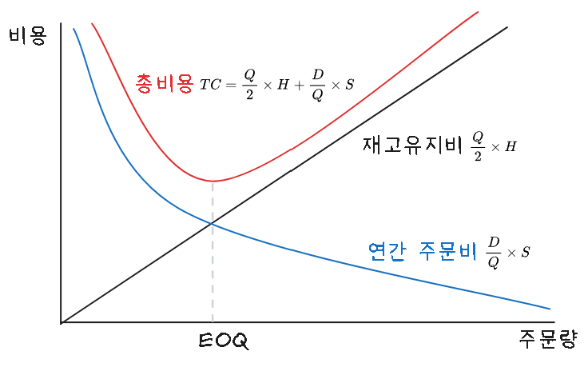
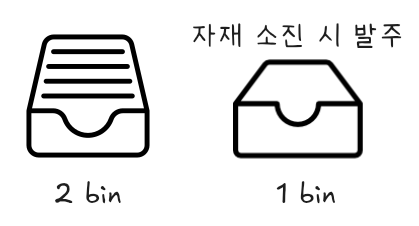
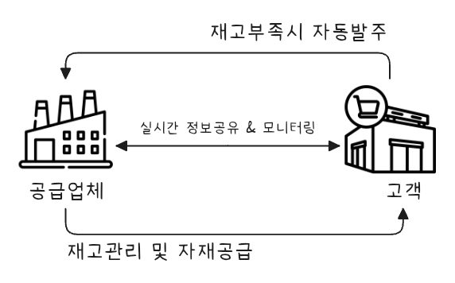
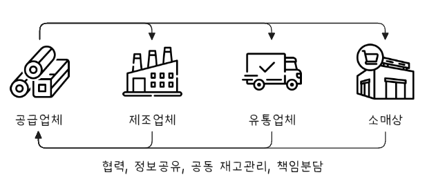

flowchart TB 자재관리 --- 1[구매관리] & 재고관리 1 --- 구매관리 & 외주관리 & 협력사관리 재고관리 --- 소요관리 & 저장관리 & 분배관리 style 재고관리 fill:#EEF
재고관리
Keywords
재고관리, 재고관리 모형, 재고 비용, EOQ, EPQ, ABC, 투빈시스템, min-Max 시스템, 정량발주방식, 정기발주방식, VMI, CMI, CPFR, COCK
재고관리
재고관리(Inventory Management)는 기업의 생산과 유통, 서비스 과정에서 필요한 자재, 반제품, 완제품 등을 적정 수준으로 유지하면서, 서비스 수준 확보와 비용 최적화를 동시에 달성하기 위한 관리 기법이다.
재고의 유형
재고는 흐름과 기능 기준으로 나눌 수 있으며 각 기준에 따른 유형이 있다.
| 분류 기준 | 유형 | 설명 |
|---|---|---|
| 흐름 기반 | 원자재재고 (Raw Material) | 생산을 위해 구매한 기본 자재 |
| 재공품재고 (WIP) | 생산 중간 단계의 제품 | |
| 완제품재고 (FG) | 생산 완료되어 판매 대기 상태 | |
| 기능 기반 | 안전재고 (Safety Stock) | 수요/공급 변동 대응용 |
| 순환재고 (Cycle Stock) | 정상적인 주문 주기 내 소비될 재고 | |
| 예상재고 (Anticipation Stock) | 수요 증가 예상 시 선구매 | |
| 이동재고 (Transit Stock) | 이동 중인 재고 | |
| 데드재고 (Dead Stock) | 오랜 기간 회전 없는 재고 |
재고관리의 목표
재고관리 주요 목표는 서비스 수준 확보, 총비용 최소화, 운영 효율성 제고, 리드다임 단축과 유연성 확보이다.
- 서비스 수준 확보: 고객에게 제품을 적시에 공급
- 총비용 최소화: 보관, 주문, 부족, 폐기 비용 최적화
- 운영 효율성 제고: 생산·판매와의 연계 최적화
- 리드타임 단축과 유연성 확보
주요 관리 기법
주요 관리 기법은 다음과 같다.
- EOQ (Economic Order Quantity)
- 경제적 주문량: 총비용(주문비용 + 보관비용)을 최소화하는 1회 주문량
- 공식:
\[EOQ = \sqrt{\frac{2DS}{H}}\]- D: 연간 수요량
- S: 1회 주문비용
- H: 단위당 연간 보관비용
- D: 연간 수요량
- ABC 분석
재고를 중요도에 따라 분류하여 집중 관리
등급 기준 관리 방식 A 중요 품목, 매출의 70~80% 엄격한 관리 B 중간 품목, 매출의 15~25% 일반적 관리 C 비중 낮은 품목, 5% 이하 단순 관리
- 정량발주 시스템 (Q 시스템)
- 일정량(Q)을 주문하고, 재고가 재주문점(R)에 도달할 때 발주
- 정기발주 시스템 (P 시스템)
- 일정 주기(P)마다 재고량을 점검하고 보충
- JIT (Just in Time)
- 필요한 시점에 필요한 양만큼만 공급 → 재고 최소화
- VMI (Vendor Managed Inventory)
- 공급업체가 고객의 재고를 대신 관리하는 시스템
- RFID 및 IoT 기반 실시간 재고관리
- 실시간 재고 상태 파악 및 예측
재고 관련 비용
| 비용 항목 | 설명 |
|---|---|
| 주문비용 | 발주, 수송, 검사 등 주문 1회당 비용 |
| 보관비용 | 창고 유지, 감가상각, 세금, 보험, 자본비용 등 |
| 부족비용 | 재고 부족으로 인한 기회손실, 고객 이탈 비용 |
| 폐기/손실비용 | 유통기한 초과, 파손, 도난 등 |
성과지표 (KPI)
| 지표 | 설명 |
|---|---|
| 재고회전율 | 연간 매출원가 / 평균 재고자산 |
| 재고일수(Inventory Days) | 365 / 재고회전율 |
| 서비스 수준 | 주문 대비 적기 납품률 |
| Fill Rate | 고객 주문을 얼마나 즉시 충족했는가 |
| Dead Stock 비율 | 장기 미회전 재고 비중 |
재고관리 전략
| 전략 구분 | 설명 |
|---|---|
| Push 전략 | 수요 예측 기반 → 사전 생산 및 공급 |
| Pull 전략 | 실제 주문 기반 → 필요 시점 생산 |
| Hybrid 전략 | 예측과 실제 수요를 조합하여 운영 |
최신 동향
- AI 기반 재고 예측 시스템 확대
- IoT 센서와 디지털 트윈을 활용한 실시간 재고 시뮬레이션
- ESG 관점의 재고 감축 (폐기물 최소화, 순환경제 대응)
- 블록체인 기반 재고 이력 추적 (특히 식품, 의약품 등)
재고 종류
기능 기반 재고 종류는 다음과 같다.
안전재고(Safety Inventory)
- 완충재고라고도 하며, 고객 서비스 차질과 부품 부족으로 인한 기회비용을 예방하기 위하여 비축하는 재고
- 제품수요, 리드타임, 부품공급 등 불확실성에 대처하기 위한 것
- 수요예측을 개선하며, 구매 또는 생산할 품목 리드타임을 줄여서 그 기간 동안 수요 불확실성을 감소
- 공급 불확실성 감소
- 생산계획을 부품납품업체들에게 알려 주면 예측이 정확해져 공급 신뢰도 향상
예상재고(Anticipation stock)
- 계절재고라고도 하며, 사업상 직면하게 되는 불규칙한 수요와 공급에 대응하기 위한 재고
- 수요 절정기에 생산수준을 많이 높이지 않기 위하여 수요가 적은 기간 동안 재고를 비축하거나 부품 납품 업체가 파업이나 생산능력 제한 때문에 위협을 받을 경우 비축한 재고
- 수요율과 산출률을 일치시키는 것, 그러나 수요 변동이 심하면 생산을 조절하기 어려우므로 수요를 평준화 하는 것이 바람직
- 수요 평준화 방안으로, 비수기에 가격을 인하하고 비수기에 판매 촉진을 강화하며, 기존 제품과 수요 사이클이 정반대가 되는 신제품을 제품 라인에 추가하는 방법
수송재고(Transit/Pileline stock)
- 물품 대금은 지급하였으나 아직 입고되지 않은 상태, 즉 수송 중인 상태인 재고
주기재고(Cycle Inventory)
- 연간 주문횟수를 줄여서 비용을 절감하려면 일회 주문량이 늘어나는데, 이로 인해 발생하는 재고
- 주문을 얼마나 자주 하고 한 번에 얼마나 할 것인가를 결정하는 것을 크기 결정이라 함
- 외주 또는 생산 로트 사이즈(발주량 Q)를 줄이면 주기재고를 줄일 수 있다. 로트사이즈를 소형화하면 그에 반비례하여 발주(작업준비) 횟수가 많아지므로 발주비(작업준비비)가 증대함
- 소로트화를 위해서는 먼저 발주(작업준비) 과정을 개선하여 발주와 작업준비에 소비되는 시간과 비용을 최소화해야 함
재고관리 모형
재고관리 모형은 수용 특성에 따라 확정적 재고관리 모형과 확률적 재고관리 모형으로 나눌 수 있다. 또한 특수한 경우 사용할 수 있는 단일기간 재고관리 모형이나 ABC 재고관리 모형도 있다.
flowchart LR 0[재고모형] 11[확정적 모형] 12[확률적 모형] 13[기타 재고 모형] 21[고정주문량 모형<br>EOQ/EPQ모형] 22[고정주문기간 모형] 23[조건부 재고 보충 시스템] 24[단일기간 재고관리 모형] 25[ABC 모형] 26["투빈시스템<br>원빈시스템<br>기본 재고 시스템"] subgraph s4[특수한 경우] 23 24 25 26 end subgraph s1[수요 및 조달 기간 특성] 11 12 13 end subgraph s2[수요량이나 리드타임에 따른 결정 방법] 21 22 end subgraph s21[주문시기 및 주문량 결정 방법] 211[뉴스벤더 모형] 212[베이스스톡 모형] end 0 --> 11 & 12 & 13 11 --> 21 & 22 12 --> 211 & 212 13 --> 23 & 24 & 25 & 26
확정적 재고관리 모형
확정적 재고관리 모형은 재고관련 비용, 수요율, 생산율이 확정적인 경우에 사용하는 관리 모형이다. 즉 수요와 리드타임이 확실하게 알려져 있을 때 사용하는 모형이다. 대표적으로 정량주문모형(Q모형), 정기주문모형(P모형)이 있다.
- 특징
-
- 재고관련 비용, 수요율, 생산율이 확정적
- 가정
-
- 수요는 미리 알려져 있고, 일정하며, 균일하게 발생한다.
- 조달기간은 알려져 있고 일정하다.
- 제품 구입단가는 일정하다.
- 주문비용 또는 준비비용은 고정비로서 일정하다.
- 주문량은 조달기간이 지나면 일시에 전량이 한번에 들어온다.
- 모든 수요는 재고부족 없이 충족된다.
- 주요 용어 설명
-
기호 및 설명
기호 설명 TC 연간 재고관련 총 비용 D 연간 수요량 Q 1회 주문량 EOQ 또는 Q* 경제적 주문량 (최적 주문량) C 단위당 구입가격(생산인 경우 생산 비용) S 1회 주문비용 또는 준비비용 H 연간 단위당 재고유지비용, 1단위를 1년간 재고로 유지하는데 소요되는 비용, 보통 단위당 구입가격의 몇 %로 산정, H = C × 몇 % d 일일 평균 수요 L 조달 기간 R 재주문점 N* 연간 최적 주문 횟수 T* 연간 최적 주문 주기 P 연간 생산율
경제적 주문량 모형(EOQ)

주문량에 따른 특징은 다음과 같다.
| 주문량이 적을 경우 | 주문량이 많을 경우 |
|---|---|
| 평균재고 감소 | 평균재고 증가 |
| 재고 유지비용 감소 | 재고 유지비용 증가 |
| 연간 주문횟수 증가 | 연간 주문 횟수 감소 |
| 연간 주문비용 증가 | 연간 주문비용 감소 |
이상적인 주문량, 즉 최적주문량은 주문비용과 재고유지비용이 적정한 수준에서 결정된 수량이다.
경제적 주문량(EOQ,economic order quantity) 모형이란 가장 단순한 형태를 갖는 재고 모형으로 연간 재고유지비용과 연간 주문비용의 합을 최소화하는 1회 주문량(EOQ 또는 Q*)을 구하는 것으로 이 때 주문량 크기를 경제적 로트 사이즈(ELS, economic lot size)라고도 한다.

| 항목 | 계산식 |
|---|---|
| 연간 재고관련 총 비용 TC (연간 주문비용 + 연간 재고 유지비용) |
\[ \frac{D}{Q}S + \frac{Q}{2}H = \sqrt{2DSH} \tag{10.1}\] |
| 경제적 주문량(Q*) | \[ \sqrt\frac{2DS}{H} \tag{10.2}\] |
| 일일평균수요(d) | \[ \frac{D}{연간영업일수} \tag{10.3}\] |
| 재주문점(R) | \[ dL \tag{10.4}\] |
| 연간 최적주문횟수(N*) | \[ \frac{D}{Q^*} = \sqrt{\frac{DH}{2S}} \tag{10.5}\] |
| 연간 최적주문주기(T*) | \[ \frac{1}{N^*} = \sqrt{\frac{2S}{DH}} \tag{10.6}\] |
- 모형이 성립하기 위한 전제조건
-
- 수요가 일정하고 예측 가능하다.
- 수요는 일정한 속도로 지속적으로 발생하며, 예측 가능한 형태로 변화한다.
- 주문 시 비용은 일정하다.
- 각 주문에 대해 발생하는 고정적인 비용이 존재하며, 주문당 비용은 일정하다.
- 재고 유지 비용이 일정하다.
- 재고를 보유하는 동안 발생하는 비용(저장비용 등)은 일정하며, 보유 재고의 양에 비례한다.
- 주문 리드 타임이 일정하다.
주문을 하고 실제로 물품이 도착하는데 걸리는 시간이 일정하다. - 주문은 한 번에 이루어진다.
- 주문은 한 번에 이루어지며, 연속적인 소규모 주문이 아니라 한 번의 주문으로 전체 수요를 충족시킬 수 있다.
- 재고가 소진되기 전에 항상 새로운 주문이 이루어진다.
- 주문이 이루어질 때 재고가 충분히 남아 있도록 계획되며, 재고가 부족하지 않게 주문이 이루어진다.
경제적 생산량 모형(EPQ)
경제적 생산량(EPQ, economic production quantity) 모형이란 생산이 진행되는 동안 생산된 제품이 재고에 더해짐과 동시에 소비가 일어나서 재고가 감소하는 경우 최적 1회 생산량을 결정하는 모형이다. 자체 생산, 조달하는 물품의 총 재고비용이 최소가 되는 1회당 경제적 생산량으로 기본 EOQ와 유사하지만 주문비용 대신 작업 준비 비용을 대체하여 사용하다는 점이 다르다.

- EPQ 모델 가정
-
- 생산이 시작되고 뒤이어 수요가 이루어지며 수요량은 생산량보다 작다.
- 생산은 일정 기간 동안 점진적으로 쌓이고 어느 정도 재고 수준에 이르면 생산을 중단한다.
- 생산이 중단되면 쌓였던 재고량은 일정량씩 소요되어 바닥 난다.
- 재고가모두 없어지면 즉시 생산 작업이 되풀이 된다.
- 재고 유지비는 생산량 크기에 정비례하여 발생한다.
- 생산단가는 생산량 크리와 관계없이 일정하다.
EPQ 모델 계산식 항목 계산식 생산기간(t) \[\frac{Q}{P} \tag{10.7}\] 평균재고수준 \[\frac{(P-D)Q}{2P} \tag{10.8}\] 연간재고유지비용 \[\frac{(P-D)QH}{2P} = \frac{DS}{Q} \tag{10.9}\] 연간생산준비비용 \[\frac{D}{Q}S \tag{10.10}\] 연간총비용(TC) \[\frac{DS}{Q} + \frac{(P-D)QH}{2P} \tag{10.11}\] 경제적 생산량(EPQ) \[\sqrt{\frac{2DS}{H}(\frac{P}{P-D})} \tag{10.12}\]
확률적 재고관리 모형
확률적 재고 모형 (Stochastic Inventory Model)은 수요와 리드 타임이 불확실하고 변동성이 있는 경우에 사용하는 모형으로 수요가 일정하지 않고, 예측할 수 없는 변동성을 포함하고 있기 때문에 확률적인 요소가 포함된다. 결품 위험을 줄이기 위해 안전재고(Safety Stock)를 설정하고 서비스 수준(결품 허용 확률)에 따라 재고량을 결정한다.
- 주요 특징
-
- 수요가 변동적이다
수요가 일정하지 않고, 예측할 수 없는 변화가 발생한다. 수요의 분포가 확률적으로 주어지며, 이를 바탕으로 재고를 관리한다. - 리드 타임의 변동성
재고 보충에 걸리는 시간 또한 일정하지 않으며, 리드 타임도 확률적이다. - 재고 부족에 대한 리스크 관리
확률적 모델은 수요 변동성과 리드 타임의 불확실성에 대비하기 위해 안전 재고를 설정하는 등 리스크를 관리하는 방법을 포함한다.
- 수요가 변동적이다
확률적 재고 모형 중 대표적인 뉴스밴더 모형(Newsvendor Model)과 베이스스톡 모형(Base Stock Model)은 재고 관리에서 수요가 불확실할 때 최적의 주문량 또는 재고 수준을 결정하는 데 사용되는 핵심 모델이다. 아래에서 각각의 개념과 특징을 정리하고, 예제와 함께 비교하면 다음과 같다.
뉴스밴더 모형 (Newsvendor Model)
- 개념
-
- 단일 기간(one-period), 단일 주문의 재고 문제를 다룸.
- 한 번의 주문으로 끝나는 상황(예: 신문, 도시락, 시즌 상품 등)에 적합.
- 수요는 확률적이며, 실제 수요보다 많이 주문하면 초과 비용(overage cost), 적게 주문하면 기회 비용(underage cost)이 발생.
- 목적
-
- 수요 불확실성 하에서 기대 이익 또는 기대 비용을 최적화하는 주문량 Q∗Q^* 결정
- 수식
-
\[P(D≤Q∗)=CuCu+CoP(D \leq Q^*) = \frac{C_u}{C_u + C_o}\]
- \(DD\): 수요 (확률 변수)
- \(Q^*\): 최적 주문량
- \(C_u\): underage cost (기회비용, 주문 부족 시 손해)
- \(C_o\): overage cost (초과 주문 시 손해)
- 예시
- 한 편의점에서 하루에 팔 도시락 수를 결정해야 한다. 도시락은 하루가 지나면 폐기해야 하며, 예상 수요는 정규분포를 따른다.
| 항목 | 값 |
|---|---|
| 도시락 판매가 | 6,000원 |
| 도시락 원가 | 3,000원 |
| 남은 도시락 폐기 손실 | 3,000원 (원가) |
| 수요 분포 | 평균 100, 표준편차 15 |
\(C_u = 6,000 - 3,000 = 3,000,\quad C_o = 3,000 \Rightarrow \frac{C_u}{C_u + C_o} = \frac{3,000}{6,000} = 0.5 \Rightarrow Q^* = \text{수요의 50퍼센타일} = 100개\)
베이스스톡 모형 (Base Stock Model)
- 개념
-
- 여러 기간(multi-period), 연속 주문이 가능한 상황에서 사용.
- 수요는 확률적이며, 리드타임(주문 후 도착까지 시간) 동안의 수요를 보충할 수 있도록 재고를 유지.
- 각 주문 시점에서 목표 재고 수준(Base stock level, SS)까지 보충.
- 목적
-
- 서비스 수준을 유지하면서 재고 부족을 최소화하고, 재고 비용을 관리.
- 수식
-
\[S = \mu_L + z \cdot \sigma_L\]
- \(\mu_L\): 리드타임 동안의 평균 수요
- \(\sigma_L\): 리드타임 동안 수요의 표준편차
- \(z\): 목표 서비스 수준에 대응하는 Z값 (예: 95% → 1.645)
- 예시
- 부품을 보관하고 수요에 맞춰 공급해야 하는 공장에서, 리드타임이 2일인 부품의 일일 수요가 정규분포를 따름.
| 항목 | 값 |
|---|---|
| 일일 평균 수요 | 50개 |
| 일일 수요 표준편차 | 10개 |
| 리드타임 | 2일 |
| 목표 서비스 수준 | 95% (z=1.645) |
\(\mu_L = 2 \cdot 50 = 100,\quad \sigma_L = \sqrt{2} \cdot 10 \approx 14.14 \Rightarrow S = 100 + 1.645 \cdot 14.14 \approx 123.27 \Rightarrow 124개\)
뉴스밴더 모형과 베이스스톡 모형 비교
| 항목 | 뉴스밴더 모형 | 베이스스톡 모형 |
|---|---|---|
| 기간 | 단일 기간 | 다기간, 반복 |
| 주문 시점 | 한 번만 주문 | 수시로 보충 |
| 수요 특성 | 확률적, 한 번만 발생 | 확률적, 반복 발생 |
| 목적 | 단기 수익 극대화 | 장기 서비스 수준 유지 |
| 적용 사례 | 도시락, 신문, 시즌 상품 | 부품 재고, B2B 납품, 정기 생산라인 |
이 두 모델은 수요의 특성과 운영 환경에 따라 선택적으로 적용된다. 뉴스밴더는 이벤트성 상품이나 폐기 우려 품목에 적합하며, 베이스스톡은 지속적인 공급이 필요한 생산, 유통 환경에 주로 사용된다.
기타 확률적 재고 모형
| 구분 | 모형명 | 특징 | 적용 사례 |
|---|---|---|---|
| 1 | (Q, R) 모형(정량·재주문점 모형) | - 고정된 주문량 QQ - 재고가 임계치 RR 이하로 떨어지면 주문 - 서비스 수준 기반 재주문점 설정 |
공장 부품, 소매유통 |
| 2 | (s, S) 모형(최소·최대 모형) | - 재고가 임계치 ss 이하일 때 - 재고를 최대치 SS까지 보충 - 수요 변동이 클 때 유리 |
고비용 부품, 항공부품 |
| 3 | (R, S) 모형(주기·최대 재고 보충 모형) | - 고정된 주기 RR마다 - 현재 재고를 최대치 SS까지 보충 - 주기적 검토 시스템 |
정기 발주가 필요한 공급망 |
| 4 | 연속검토 vs 주기검토 모형 | - 연속: 수시로 재고 수준 확인 - 주기: 일정 주기로만 재고 확인 |
전자는 ERP 기반 공장, 후자는 오프라인 매장 |
| 5 | 서비스 수준 기반 모델 | - 목표 서비스 수준(예: 95%)을 만족시키는 재고 수준 결정 - 재고 부족 리스크를 확률적으로 반영 |
병원, 고가 장비 재고 |
| 6 | 다기간 동적 모형 (Stochastic Dynamic Programming) | - 여러 기간에 걸쳐 수요 및 재고 상태를 고려해동적으로 정책 수립 - 수요가 시간에 따라 변화할 때 효과적 |
항공권, 시즌 재고, 리드타임이 가변적일 때 |
확률적 재고 모형 구조를 간단히 비교하면 다음과 같다.
| 모형 | 주문 조건 | 재고 보충 방식 | 서비스 수준 반영 여부 |
|---|---|---|---|
| (Q, R) | 재고가 R 이하일 때 | Q만큼 고정 주문 | ○ |
| (s, S) | 재고가 s 이하일 때 | S까지 보충 | ○ |
| (R, S) | 매 R주기마다 | S까지 보충 | △ (검토 주기에 의존) |
| 뉴스밴더 | 1회 주문 | Q만큼 결정 | ○ |
| 베이스스톡 | 수시 보충 | S까지 보충 | ○ |
| 동적계획 | 상태에 따라 유연하게 결정 | 동적 최적화 | ○ (비용과 리스크 동시 고려) |
- 간단한 예시 비교
-
- (Q, R) 모형: 부품 재고가 50개(R) 이하가 되면 항상 200개(Q)를 주문
(s, S) 모형: 재고가 30개(s) 이하가 되면 재고가 100개(S)가 되도록 보충
(R, S) 모형: 매주 수요일마다 현재 재고 수준과 관계없이 100개(S)가 되도록 보충
동적계획 모형: 다가오는 연휴, 수요 증가를 예측해 이번 주는 150개, 다음 주는 100개로 유동적 주문
레스토랑이 하루에 음료수를 판매한다고 가정했을 때, 음료수의 수요는 날마다 달라질 수 있다. 예를 들어, 날씨가 좋으면 수요가 증가하고, 나쁠 경우에는 수요가 감소한다. 이 경우 확률적 재고 모형을 사용하여 수요의 변동성을 고려하고, 재고 부족을 방지하기 위해 안전 재고를 설정한다.
| 특징 | 확정적 재고 모형 | 확률적 재고 모형 |
|---|---|---|
| 수요 예측 | 일정하고 확정적이다 | 불확실하고 변동적이다 |
| 리드 타임 | 일정하다 | 변동성이 있다 |
| 주요 목표 | 최적의 주문량과 주문주기를 결정한다 | 수요의 변동성에 대응하는 재고 수준을 결정한다 |
| 주요 모형 | EOQ (경제적 주문량 모형) | 뉴스벤더 모형, (R, Q) 시스템 |
| 적용 분야 | 수요가 일정하고 예측이 가능한 경우 | 수요와 리드 타임이 불확실한 경우 |
| 예시 | 일정한 수요의 제품 판매, 정기적인 주문이 필요한 경우 | 수요 변동이 큰 제품, 계절성 수요가 있는 제품 |
확정적 재고 모형은 수요가 일정하고 예측 가능한 경우에 적합하다. 이 모형은 예측이 정확하므로 최적의 재고 수준을 유지하는 데 유리하다.
확률적 재고 모형은 수요와 리드 타임이 불확실한 경우에 적합하다. 이 모형은 수요의 변동성과 불확실성에 대비해 안전 재고를 설정하고 리스크를 관리하는 데 유리하다.
따라서, 재고 관리 방식은 사업 환경에 따라 선택해야 하며, 수요 예측의 정확도와 변동성에 따라 확정적 또는 확률적 모형을 선택하여 최적의 재고 관리를 수행해야 한다.
기타 재고관리 모형
대표적인 재고관리 모형으로 ABC 모형, 투빈(Two Bin)시스템, min-Max시스템 등이 있다.
ABC 모형
ABC 모형은 재고 품목을 중요도(또는 기여도)에 따라 분류하여 차별적 관리 전략을 적용하기 위한 기법이다. 이는 재고 관리 효율을 높이고, 한정된 자원을 중요한 품목에 집중하기 위한 매우 실용적인 방식이다.
- ABC 모형 개념
-
- 전체 재고 품목 중 소수의 품목이 전체 가치의 대부분을 차지하는 파레토 법칙(80/20 원칙)에 기반한 분류 방법이다.
- 보통 연간 소비 금액(Annual Consumption Value = 연간 수요량 × 단가)을 기준으로 품목을 분류한다.
| 분류 | 구성 비율(품목 수 기준) | 기여 비율(가치 기준) | 관리 전략 |
|---|---|---|---|
| A | 상위 약 10~20% | 전체 가치의 70~80% | 엄격한 통제, 정밀 예측, 정기 발주 |
| B | 약 20~30% | 전체 가치의 15~25% | 중간 수준의 관리, 간단한 정책 |
| C | 하위 50~70% | 전체 가치의 5~10% | 간단한 관리, 대량 구매 또는 느슨한 재고관리 |
ABC 분석 절차
- 각 품목의 연간 소비 금액 계산 \(연간 소비 금액=단가×연간 수요량\text{연간 소비 금액} = \text{단가} \times \text{연간 수요량}\)
- 품목을 연간 소비 금액 기준으로 내림차순 정렬
- 누적 비율 계산 후 A, B, C 등급으로 분류
- 각 등급에 맞는 재고 관리 전략 적용
아래는 10개 품목에 대한 ABC 분석 예시다.
| 품목 | 단가(원) | 연간 수요 | 연간 소비 금액 | 누적 비율 | 등급 |
|---|---|---|---|---|---|
| P1 | 10,000 | 500 | 5,000,000 | 40% | A |
| P2 | 8,000 | 400 | 3,200,000 | 66% | A |
| P3 | 6,000 | 300 | 1,800,000 | 81% | B |
| P4 | 2,000 | 200 | 400,000 | 84% | B |
| P5 | 1,000 | 300 | 300,000 | 86% | B |
| P6~P10 | … | … | 합계 14% | 100% | C |
- 총 10개 품목 중 상위 2개(P1, P2)가 연간 가치의 66%를 차지하므로 A등급으로 분류함
아래는 관리 전략 차별화 예시다.
| 구분 | A품목 | B품목 | C품목 |
|---|---|---|---|
| 발주 방식 | 정밀 예측 + EOQ / (Q,R) | 단순한 주기발주 | 대량 일괄발주 또는 Min-Max |
| 발주 빈도 | 자주 | 중간 | 드물게 |
| 안전재고 | 낮음 (정확 예측) | 중간 | 높음 (불확실 대응) |
| 재고 회전율 | 높게 유지 | 중간 | 낮아도 무방 |
| 주의도 | 높은 관리 | 중간 관심 | 간단한 점검 수준 |
활용 목적과 장점을 살펴보면 다음과 같다.
| 목적 | 설명 |
|---|---|
| 자원 집중 | A품목에 재고관리 인력, IT 시스템, 재고 자금 집중 |
| 비용 절감 | C품목은 관리 단순화 → 총 관리비용 절감 |
| 재고 회전 개선 | 고가 품목에 재고 회전율 목표를 설정 가능 |
| 실무 간편화 | 수백~수천 개 품목을 효율적으로 그룹 관리 가능 |
주의사항
- 단가가 낮더라도 수요량이 많은 품목이 A로 분류될 수 있음
- 일부 품목은 전략적 중요도(예: 공급망 리스크)가 커서 XYZ 분석(수요 안정성 기준)과 병행 사용하기도 함
- 정기적으로 재분석 필요 (분류는 시간 경과에 따라 변함)
ABC 모형은 뉴스밴더나 베이스스톡 같은 수학적 재고 최적화 모델과 병행 사용될 수 있으며, ERP나 MRP 시스템에도 자주 포함된다. ABC로 품목을 분류한 후 각 등급별로 적절한 재고 정책을 수립하는 것이 실무에서 가장 효과적인 접근이다.
투빈(Two Bin) 시스템

Two-bin 시스템은 재고 관리에서 사용되는 간단하고 직관적인 보충 방식으로, 특히 소모성 자재, 소형 부품, 의약품, 사무용품 등 자주 쓰이는 품목에서 널리 사용된다. 이름 그대로, 2개의 상자(bin)를 사용하여 재고를 관리하는 방식이다.
- Two-bin 시스템 개념
-
- 재고를 두 개의 상자에 나누어 보관한다.
- 첫 번째 상자(1st bin)가 모두 소진되면, 두 번째 상자(2nd bin)를 사용하면서 동시에 재주문을 진행한다.
- 두 번째 상자의 재고는 리드타임 동안 사용할 수 있는 최소한의 재고로 설정된다.
구조와 작동 방식
┌──────────────┐ ┌──────────────┐
│ 1st bin │ 사용 → │ 2nd bin │ ← 리드타임 동안 사용
└──────────────┘ └──────────────┘
↓ ↓
재고가 0이 되면 재주문 발주
→ 2nd bin 사용 시작 → 신규 재고 입고 → 2개 bin 다시 채움- 1st bin: 운영 재고(working stock)
- 2nd bin: 보충 시점 재고(reorder point) 또는 안전 재고(safety stock)
- 특징
-
항목 설명 목적 재고 부족 방지, 단순하고 직관적인 운영 적용 조건 수요가 일정하거나 예측 가능한 품목 사용 장소 병원, 사무실, 조립라인, 창고 등 필요 요건 리드타임 동안 수요를 충족할 수 있도록 2nd bin 크기 설정 필요 관리 방식 물리적 표시 기반: 눈으로 보고 주문 여부 판단 (비전자적 시스템) - {tbl-colwidths=[“20,80”]}
부품 A를 one-bin당 100개씩 보관하고, 일일 평균 수요는 20개, 리드타임은 4일이라고 가정하자.
- 1st bin: 100개 (일반 사용분)
- 2nd bin: 20개 × 4일 = 80개 (리드타임 재고)
1st bin이 소진되면:
- 작업자가 2nd bin을 사용 시작
- 동시에 100개 발주
- 리드타임 동안 2nd bin 사용 → 입고 시 다시 1st, 2nd bin 채움
장점과 단점
| 항목 | 장점 | 단점 |
|---|---|---|
| 관리 용이성 | 시스템이 단순하고 시각적으로 명확 | 정확한 재고 기록 없음 (ERP 연동 어려움) |
| 작업자 편의성 | 교육 없이도 사용 가능 | 수요가 급증할 경우 부족 가능 |
| 비용 측면 | 관리 인건비 및 시스템 비용 절감 | 과잉 재고 또는 주문 지연 가능성 존재 |
적합한 상황과 부적합한 경우
| 적합한 경우 | 부적합한 경우 |
|---|---|
| 반복적이고 안정적인 수요 | 고가 품목, 수요 변동이 큰 품목 |
| 소형 저가 소모품 | 긴 리드타임, 긴 수급주기 품목 |
| 보건/조립라인 부품 | 복잡한 품목 구조 또는 유통기한 이슈 |
Two-bin vs (Q, R) 모형
| 항목 | Two-bin 시스템 | (Q, R) 재고 모형 |
|---|---|---|
| 주문 기준 | 물리적 상자 기준 | 재고량 기준 (수량으로 계산) |
| 발주량 | 고정 or bin 수량 | Q(고정) |
| 재주문점 | 2nd bin의 수량 | R |
| 적용 난이도 | 낮음 (수작업) | 중간~높음 (ERP/시뮬레이션 가능) |
Two-bin 시스템은 간단하고 직관적인 재고 보충 시스템으로서, 일정한 수요와 빠른 회전이 있는 소형 품목에 특히 효과적이다. IT 시스템이 없거나 간단한 현장 중심의 재고 운영이 필요한 경우 실무에서 매우 유용하게 활용된다. 다만, 수요 변동성과 리드타임이 높은 품목에는 더 정교한 모형((Q, R), (s, S) 등)을 사용하는 것이 바람직하다.
정량발주방식과 정기발주방식
정기발주방식과 정량발주방식은 발주 시점에 따라 구분된다.
| 구분 | 정량발주시스템 | 정기발주시스템 |
|---|---|---|
| 개요 | 재고가 발주점에 이르면 정량을 발주 | 정기적으로 부정량을 발주 |
| 발주시기 | 부정기 | 정기 |
| 발주량 | 정량(경제적 발주량) | 부정량(최대 재고량 - 현재고) |
| 재고조사방식 | 계속 실사 | 정기 실사 |
| 안전재고 | 조달기간 중 수요변화 대비량 | 조달기간 및 발주주기 중 수요변화 대비량 |
min-Max 시스템
Min-Max 시스템은 재고 관리에서 사용되는 간단하고 널리 보급된 주기 검토형(Periodic Review) 재고 통제 기법이다. 최소 재고 수준(Min)과 최대 재고 수준(Max)을 설정해 두고, 주기적으로 재고 수준을 확인하여 보충 발주하는 방식이다.
- Min-Max 시스템 개요
-
- 재고가 최소 수준(Min) 이하로 내려가면 발주를 실시.
- 발주량은 Max 수준까지 채우는 수량.
- 주기적 검토 주기(예: 매주 월요일 또는 매달 1일 등)에 맞춰 실행함.
- 구조와 동작 방식
-
항목 설명 Max 재고가 도달해야 할 목표 수준 Min 재고 보충을 결정하는 기준점 현재 재고 검토 시점의 재고 수량 발주량 Max – 현재 재고 - 동작 예시
-
항목 수치 Max 1,000개 Min 400개 현재 재고 350개 발주량 1,000 – 350 = 650개
→ 현재 재고(350개) < Min(400개)이므로 650개 발주
- 수식 정리
-
- 발주 조건:
\(재고량≤Min\text{재고량} \leq \text{Min}\) - 발주량:
\(주문량=Max−현재 재고량\text{주문량} = \text{Max} - \text{현재 재고량}\)
- 장단점 비교
-
항목 장점 단점 관리 단순성 설정만 하면 정기적 검토로 자동 운영 가능 수요 예측이나 리드타임이 부정확하면 과잉/부족 발생 가능 비용 측면 시스템 구현이 간단, ERP 없이도 운영 가능 주기적 검토는 수요 급변 시 대응이 느림 적용 용도 다품종 소량 품목에 적합 고가 품목에는 과잉재고 우려 - Min, Max 설정 방법
-
항목 설명 계산 예 Min 리드타임 동안 수요 + 안전재고 d⋅L+z⋅σd L + z Max 다음 발주주기 동안의 수요 + Min d⋅T+Mind T + ※ T: 발주 주기 - 예시
-
- 일일 수요: 50개
리드타임: 5일
발주 주기: 7일
안전계수: 1.65, 수요 표준편차: 10개
- Min:
\(50 \cdot 5 + 1.65 \cdot (10 \cdot \sqrt{5}) \approx 250 + 36.9 = 286.9 \Rightarrow 287개\)
- Max:
\(= 50 \cdot 7 + 287 = 350 + 287 = 637개\)
- 다른 시스템과 비교
-
항목 Min-Max Two-bin (Q, R) 모형 검토 시점 정기적 (주기 검토) 불규칙 (재고 소진 시) 지속적 (연속 검토) 발주량 Max – 현재 재고 Bin 수량 고정 고정 주문량 Q 발주 조건 현재 재고 ≤ Min 상자 1 소진 현재 재고 ≤ R 특징 간편, 직관적 물리적 시각적 운영 수학적 최적화 가능 - 적용 사례
-
- 병원 재고품, 사무용품, 간단한 소모성 부품
수요 예측이 어렵고, 재고 회전이 빠른 품목
정기 발주 루틴이 정착된 공공기관이나 중소기업
핵심 포인트를 정리하면 다음과 같다.
| 핵심 포인트 | 설명 |
|---|---|
| 개념 | Min 이하일 때 Max까지 채우는 발주 시스템 |
| 조건 | 정기적 검토가 가능하고 수요 패턴이 예측 가능할수록 효과적 |
| 유용성 | ERP 시스템 없이도 수작업 또는 간단한 프로그램으로 운영 가능 |
Min-Max 시스템은 운영이 간단하면서도 안전재고와 수요를 반영할 수 있어 실무에서 자주 활용되며, 특히 적시관리(JIT)가 필요하지 않은 환경에서 유용하다.
재고 비용 및 재고 성과 척도
flowchart TB 00[재고관련비용] 01["주문비용<br>Procurement costs"] 02["재고유지비용<br>Inventory carrying costs"] 03["품절비용<br>Out-of-stock costs"] 00 --- 01 & 02 & 03
\[ \text{총 재고비 = 재고비용 합 = 주문/구매 준비 비용 + 재고 유지 비용 + 품절 비용(재고 부족비)} \tag{10.13}\]
재고관련 비용은 일반적으로 제품 가치 15~35% 발생한다(이자, 보관비용, 세금, 보험료, 상품 훼손 비용 등).
주문/준비 비용 (order/setup cost)
- 주문비용이란 창고에 입하를 위한 주문 행위를 할 때 발생하는 비용
- 주문 또는 준비 횟수에 비례하지만, 주문 크기에는 전혀 관계가 없다고 가정재고 유지 비용 (holding cost)
- 재고 유지비란 일정 수준 재고품을 보유하고유지할 경우 발생하는 비용
- 재고 유지비는 재고량 변화에 따라서 직접적으로 비례하여 변화하므로 변동비로 취급품절비용 (stock out cost)
- 외적 및 내적 재고 부족
- 재고 부족(품절)으로 발생되는 비용으로 판매기회나 고객 상실인 기회 상실 비용재고 관리 척도
재고 관리 측정을 위한 기본 형태로 다음 4가지가 있다.
- 평균 총 재고액(Average aggregate inventory value)
- 재고 회전율(Inventory turnover rate 또는 Inventory turnover ratio)
- 재고 공급 주수(Weeks of supply 또는 Inventory weeks of supply)
- 재고 공급일수(Day of supply)
평균 총 재고액
- 현재 재고로 보유하고 있는 품목 가치 합, 재고 총 평균 가액
- 기업이 어떤 기간 동안 재고로 보유하고 있는 모든 품목(원자재, 재공품, 완제품 등) 총 평균 가치(원가 기준)
- 평균 총괄 재고가치는 기업이 얼마나 많은 자산이 재고에 묶여 있는가를 나타내는 지표
- 총 자산 대비 평균적으로 제조업은 25%, 유통업체는 75% 수준\[ 평균총재고액 = \frac{기초재고액 + 기말재고액}{2} \tag{10.14}\]
재고 공급일수
- 현재 보관 중인 재고를 이용할 경우 기대 판매 가능일 수(현재 재고로 며칠을 공급할 수 있는가)\[ 재고 \ 공급일수 = \frac{평균재고가액}{일당매출원가} \tag{10.15}\]
재고 공급주수
- 평균 총괄 재고 가치를 주당 매출원가로 나눈 값\[ 재고 \ 공급주수 = \frac{평균재고가액}{주당매출원가} \tag{10.16}\]
재고 회전율
- 연간 매출원가를 연간 평균 총재고액으로 나눈 재고 측정치
- 회전율은 일정한 기간을 전제로 하고그 사이에 판매 활동이 어떻게 공헌했는지 측정하는 지표로 회전율이 높은수록 좋음\[ 회전율 = \frac{(연간)매출액(원가)}{(평균)재고액} \tag{10.17}\]
공급업체 재고 관리
재고 관리에 있어 재고관리 주체에 따라 다양한 방식이 존재한다.
VMI

CMI는 Co-Managed Inventory(공동 재고 관리)를 의미하며, 이는 수요자와 공급자가 함께 재고를 관리하는 방식으로, VMI(Vendor Managed Inventory)보다 유연하고, 재고 소유와 운영 책임을 일부 공유하는 협력적 재고 관리 방식이다.
Co-Managed Inventory(CMI) 개요
| 항목 | 설명 |
|---|---|
| 정의 | 공급자와 수요자가 협업하여 재고를 계획하고 운영하는 방식 |
| 재고 소유권 | 일반적으로 수요자에게 있음 (다만 상황에 따라 분담 가능) |
| 재고 책임 | 공급자와 수요자가 역할을 나누어 공동 수행 |
| 운영 방식 | 수요자와 공급자가 재고 수준, 보충, 발주 등 일부 역할을 분담 |
| 목적 | 재고 운영 효율성과 공급망 협업성 향상 |
CMI vs VMI vs 일반 방식 비교
| 항목 | 일반 재고 | VMI | CMI (Co-managed) |
|---|---|---|---|
| 재고 소유 | 수요자 | 수요자 | 보통 수요자 (일부 예외 존재) |
| 재고 보충 주체 | 수요자 | 공급자 | 공동 협의 |
| 발주 결정 | 수요자 | 공급자 | 공급자 제안 + 수요자 승인 |
| 협업 수준 | 낮음 | 높음 | 중간~높음 (협상 기반) |
| 유연성 | 낮음 | 제한적 | 높음 |
CMI 운영 구조
[수요자] ← 협의/승인 → [공급자]
↑ ↓
재고 운영 수요 예측, 보충 제안- 공급자: 수요 예측, 재고 분석, 보충 제안 수행
- 수요자: 제안 승인, 재고 소유, 공간 제공
- 공동 관리: 발주 타이밍 및 수량 협의
역할 분담 예시
| 항목 | 공급자 역할 | 수요자 역할 |
|---|---|---|
| 수요 예측 | 제공 | 검토 및 피드백 |
| 재고 보충 계획 | 제안 | 승인 |
| 재고 모니터링 | 공동 수행 | 공동 수행 |
| 소유권 | 없음 또는 제한 | 보통 보유 |
| 최종 발주 승인 | 없음 | 있음 |
CMI 도입 효과
| 효과 | 설명 |
|---|---|
| 재고 최적화 | 공급자도 수요 데이터를 활용하므로 적정 재고 유지 가능 |
| 공급망 협업 | 수요자와 공급자 간 정보 공유 기반의 신뢰관계 강화 |
| 비용 절감 | 과잉재고, 부족재고, 긴급 발주 감소 |
| 리드타임 단축 | 예측 기반 조기 준비 가능 |
적용 사례
| 산업 | 적용 형태 |
|---|---|
| 자동차 | 1차 벤더와 완성차 업체 간 공동 재고 관리 |
| 반도체/전자 | EMS 업체와 칩 공급업체 간 CMI 운영 |
| 제약/화학 | 규제 품목에 대한 예측 기반 공동 운용 |
CMI 도입 시 고려사항
| 항목 | 내용 |
|---|---|
| 정보 공유 체계 | ERP, EDI 등 시스템 연동이 필수 |
| 책임 구분 | 역할과 권한을 명확히 문서화해야 함 |
| 협의 프로세스 | 정기 미팅, 조정 루틴 등 운영 체계 필요 |
| 공급자의 역량 | 수요 예측, 물류 계획 능력이 충분해야 함 |
주요 내용을 정리하면 다음과 같다.
| 항목 | 설명 |
|---|---|
| 개념 | 수요자와 공급자가 공동으로 재고를 계획·운영 |
| 핵심특징 | 역할 분담, 재고 보충 협의, 소유권은 주로 수요자에게 있음 |
| 장점 | 협력 기반의 재고 최적화, 공급망 안정성 강화 |
| 유사 제도 | VMI보다 더 유연하고 수요자 통제권이 강함 |
CMI(Co-managed Inventory)는 VMI보다 유연하면서도 협업 효과는 유지할 수 있어, 공급망 파트너 간 신뢰는 있지만 완전한 통제를 위임하기는 어려운 경우에 적합한 중간 모델이다. 시스템과 협의 프로세스가 잘 마련된 기업에서 실효성을 발휘한다.
CPFR

CPFR (Collaborative Planning, Forecasting, and Replenishment)는 공급망(Supply Chain) 참여 기업 간에 계획, 수요 예측, 재고 보충을 공동으로 수행하여 전체 공급망의 효율성과 서비스 수준을 향상시키는 협업 기반 재고 관리 방식이다.
CPFR은 단순한 공급자-수요자의 재고 관리 방식을 넘어, 정보의 실시간 공유와 협업적 의사결정을 바탕으로 하는 고도화된 공급망 운영 전략이다.
CPFR 개요
| 항목 | 설명 |
|---|---|
| 정의 | 공급자와 수요자가 계획, 수요예측, 재고보충을 공동으로 수행하는 협업 모델 |
| 목적 | 공급망의 재고 최적화, 수요 대응력 향상, 비용 절감 |
| 기본 요소 | 정보 공유, 공동 계획 수립, 예측 조정, 보충 관리 |
| 적용 대상 | 제조사-도매상, 도매상-소매상, 제조사-유통사 등 공급망 상의 모든 파트너 관계 |
CPFR 9단계 프로세스 (표준 모델)
| 단계 | 설명 |
|---|---|
| 1. 협업 관계 수립 | 협업 파트너 간 계약 및 협업 목표 정의 |
| 2. 공동 비즈니스 계획 | 마케팅, 판촉, 제품 출시, 생산 계획 등 공유 |
| 3. 수요 예측 개발 | 수요 예측을 개별적으로 수행하고 결과 공유 |
| 4. 수요 예측 조정 | 불일치 조정 및 합의된 예측 도출 |
| 5. 주문 계획 개발 | 수요 기반의 재고/주문 계획 수립 |
| 6. 주문 계획 공유 | 계획을 상호 공유하고 조정 |
| 7. 주문 실행 | 수요에 따라 발주 실행 |
| 8. 성과 측정 | 재고 수준, 예측 정확도, 서비스 수준 등 평가 |
| 9. 관계 개선 | 성과 분석을 바탕으로 프로세스 개선 및 피드백 |
CPFR 구성 요소
| 구성 요소 | 설명 |
|---|---|
| 협업 관계 | 장기적 파트너십과 신뢰 기반 |
| 정보 공유 | POS, 재고, 수요, 마케팅 정보 공유 |
| 공동 의사결정 | 계획, 예측, 재고 운영 등에 대해 공동 협의 |
| 기술 인프라 | ERP, SCM, EDI, 클라우드 기반 시스템 연동 필요 |
CPFR 도입 효과
| 항목 | 기대 효과 |
|---|---|
| 수요 예측 정확도 향상 | 공급자와 수요자가 예측을 조정하여 오차 감소 |
| 재고 최적화 | 과잉재고 및 품절 최소화 |
| 리드타임 단축 | 정보 공유로 사전 대응 가능 |
| 공급망 민첩성 증가 | 프로모션, 수요 급증에 신속 대응 |
| 파트너 간 관계 강화 | 지속적인 협업 구조 형성 |
CPFR vs VMI vs CMI
| 항목 | CPFR | VMI | CMI |
|---|---|---|---|
| 주체 | 공급자 + 수요자 (공동 관리) | 공급자 중심 | 공급자+수요자 (공동 운용) |
| 협업 수준 | 매우 높음 | 중간 | 중간~높음 |
| 재고 보충 | 공동 계획에 따라 | 공급자가 단독 결정 | 협의 기반 |
| 정보 공유 | 고도화된 공유 (ERP, POS 등) | 제한적 공유 | 실무 수준 공유 |
| 적용 난이도 | 높음 (시스템 연동 필요) | 중간 | 중간 |
사례 예시
| 기업 | 적용 사례 |
|---|---|
| Walmart | 공급자와 POS 데이터를 실시간 공유하며 수요예측과 보충을 공동 수행 |
| P&G & Target | 프로모션 정보와 수요예측을 사전 공유하여 공동 기획 운영 |
| Samsung & 이마트 | 신제품 출시 전 공동 판매 계획 수립, 판매 성과 추적 |
주요 내용을 정리하면 다음과 같다.
| 항목 | 내용 |
|---|---|
| 정의 | 공급자와 수요자가 계획·예측·보충을 공동 수행하는 협업 재고관리 모델 |
| 주요 장점 | 예측 정확도 향상, 재고 최적화, 파트너 신뢰 구축 |
| 성공 요인 | 정보 공유 시스템, 명확한 역할 분담, 지속적 관계 개선 |
| 적합 대상 | 대형 제조사, 유통사, 글로벌 공급망 참여 기업 |
CPFR은 단순한 재고관리 기법이 아니라, 공급망 전체를 아우르는 전략적 협업 체계로서, SCM 고도화를 원하는 기업에게 매우 효과적인 방식이다. 다만, 시스템 구축, 데이터 공유 체계, 조직 간 신뢰가 필수 전제 조건이다.
COCK
코크(COCK) 시스템은 협력업체 간의 상호 협력과 정보 공유를 통해 공급망 전체의 효율성을 극대화하는 재고관리 시스템이다. COCK은 “Cooperation, Optimization, Communication, Knowledge-sharing”의 약자로, 협력과 최적화를 기반으로 공급망 전반을 관리하는 데 중점을 둔다.
주요 특징
- **협력 중심 운영**
공급망에 참여하는 모든 협력업체가 정보를 공유하고 함께 의사결정한다.
- **실시간 데이터 교환**
[@sec-iot], [@sec-cloud], [@sec-erp] 등의 기술을 활용해 실시간으로 재고, 생산, 물류 데이터를 교환한다.
- **공급망 전체 최적화**
개별 기업이 아닌 공급망 전체를 하나의 시스템으로 보고, 비용 절감 및 효율 극대화를 목표로 한다.
- **예측 및 유연성 강화**
[@sec-ai]와 [@sec-bigdata] 분석을 통해 수요를 예측하고, 시장 변화에 신속하게 대응할 수 있다.운영 방식
- **데이터 통합**
협력업체 간의 생산, 재고, 물류 데이터를 클라우드 플랫폼에 통합하여 가시성을 확보한다.
- **공동 의사결정**
각 업체는 데이터를 바탕으로 공동으로 최적화된 생산 및 재고관리 방안을 설계한다.
- **지속적인 개선**
운영 데이터를 분석해 문제점을 식별하고, 지속적으로 프로세스를 개선한다.| 장점 | 단점 |
|---|---|
| 공급망 전체의 가시성을 높여 운영 효율을 극대화한다. | 초기 구축 비용이 높고 기술적 역량이 필요하다. |
| 리드 타임 단축과 재고 비용 절감 효과를 제공한다. | 협력업체 간의 이해관계 조율이 어려울 수 있다. |
| 협력업체 간의 신뢰 관계를 강화한다. | 데이터 공유에 대한 보안 문제가 발생할 가능성이 있다. |
| 불확실성에 유연하게 대응할 수 있는 시스템을 구축한다. |
코크 시스템은 특히 다수의 협력업체가 복잡하게 얽혀 있는 산업(예: 자동차, 전자제품)에서 효과적으로 활용되며, 전체 공급망의 경쟁력을 높이는 데 핵심적인 역할을 한다.
참고자료
CRP


CRP(Continuous Replenishment Program)는 지속적 보충 프로그램으로, 공급망에서 판매 데이터를 기반으로 자동으로 재고를 보충하는 방식이다. 주로 제조업체와 소매업체 간 협력을 통해 실시간으로 수요를 분석하고 최적의 재고 수준을 유지하는 데 활용된다.
CRP의 특징
- 실시간 또는 정기적인 데이터 공유
POS(Point of Sale) 데이터를 활용하여 재고를 예측하고 자동으로 보충
- 자동화된 주문 프로세스
수요 변화에 따라 공급업체가 직접 재고를 조정
- 공급업체와 소매업체 간 협력 강화
재고 수준 최적화를 통해 운영 효율 향상
| 장점 | 단점 |
|---|---|
| 재고 수준을 최적화하여 불필요한 과잉 재고 감소 | 초기 시스템 구축 비용과 기술적 요구사항이 높음 |
| 수요 변화에 신속하게 대응하여 품절 가능성 최소화 | 공급업체와 소매업체 간의 긴밀한 협력 필요 |
| 주문 프로세스 자동화를 통해 운영 효율성 증대 | 데이터 공유에 따른 보안 및 기밀 유지 문제 발생 가능 |
| 전체 공급망의 가시성을 높여 계획 및 조달 최적화 | 수요 예측 오류 발생 시 과소 또는 과잉 보충 위험 |
CRP 적용 사례
- 대형 마트(예: 월마트, 코스트코)
POS 데이터를 기반으로 상품 재고를 자동 조정하여 부족 시 제조업체에서 즉시 보충
- 제약 산업
병원 및 약국의 의약품 재고를 실시간 모니터링하여 필요한 만큼만 공급
- 편의점 및 소매점
빠르게 소진되는 제품(음료, 간편식 등)을 지속적으로 보충하여 품절 방지
CRP는 공급망 운영 효율을 극대화하면서도 재고 비용을 최소화할 수 있는 전략으로, 공급업체와 소매업체 간의 긴밀한 협력이 필수적이다.
CRP vs. ECR
| 항목 | CRP | ECR |
|---|---|---|
| 정의 | 판매정보 기반 지속적 자동 보충 | 소비자 수요에 효율적 대응을 위한 전사적 전략 |
| 적용 범위 | 재고보충 중심 | 카테고리, 마케팅, 재고, 유통 등 전체 |
| 중심 기술 | POS 연동, EDI, ERP | POS 분석, 고객 인사이트, SCM 시스템 |
| 협업 대상 | 주로 공급자 ↔︎ 유통사 | 공급자 ↔︎ 유통사 ↔︎ 물류 ↔︎ 소비자 |
| 관계 | ECR의 세부 실행 전략 중 하나가 CRP |
ECR(Efficient Customer Response)은 효율적 소비자 대응으로 제조사, 유통사, 물류업체가 협력하여 소비자 수요에 빠르고 효율적으로 대응하기 위한 공급망 전략이다. 소비자 만족도 향상, 총비용 절감, 재고 회전율 향상을 목적으로 한다. 소비자 중심에서 POS 데이터 기반 상품 구성 및 재고 운영 최적화가 특징이다.
제품가용성
제품가용성(Product Availability)은 고객이 원하는 시점에 원하는 제품을 구매할 수 있는 능력을 의미하며, 공급망 관리(SCM)에서 중요한 성과 지표(KPI) 중 하나이다. 이는 고객 만족도, 매출, 브랜드 신뢰도에 직접적인 영향을 미친다.
제품가용성의 주요 지표
- **주문 충족률(Fill Rate)**: 고객 주문량 중 즉시 출고 가능한 비율
- **재고 부족률(Stockout Rate)**: 고객이 구매를 원할 때 제품이 없는 경우의 비율
- **리드 타임(Lead Time)**: 제품이 소진된 후 다시 보충되는 데 걸리는 시간
- **서비스 수준(Service Level)**: 특정 기간 동안 재고 부족 없이 제품을 제공할 확률 | 요인 | 설명 |
|---|---|
| 재고 관리 | 적정한 재고 수준을 유지하여 품절 또는 과잉 재고 방지 |
| 수요 예측 | 고객 수요를 정확히 예측하여 적절한 재고를 확보 |
| 공급업체 신뢰성 | 공급업체가 정해진 일정에 맞춰 제품을 공급하는 능력 |
| 물류 및 유통 | 효과적인 창고 운영 및 운송 시스템을 통한 신속한 공급 |
| 기술 및 자동화 | AI, ERP, WMS 등의 시스템을 활용한 실시간 재고 관리 |
제품가용성 향상 전략
- 안전재고(Safety Stock) 확보: 수요 변동을 대비한 최소한의 재고 유지
- 실시간 재고 모니터링: IoT 및 AI 기반 시스템을 활용하여 재고 현황 파악
- 공급망 협업 강화: 공급업체 및 유통업체와 협력하여 원활한 재고 조달
- 다중 소싱 전략: 여러 공급업체를 활용하여 공급망 리스크 분산
- 고객 주문 데이터 분석: 판매 데이터 기반의 정밀한 수요 예측 적용
제품가용성의 중요성
- 고객 만족도 향상: 원하는 제품을 원하는 시점에 제공하여 신뢰도 증가
- 매출 증대: 재고 부족으로 인한 판매 기회 손실 방지
- 경쟁력 확보: 원활한 제품 공급으로 경쟁사 대비 우위 확보
- 운영 비용 절감: 재고 비용과 긴급 조달 비용 감소
제품가용성은 효율적인 재고 및 공급망 관리를 통해 최적화할 수 있으며, 기업의 수익성과 고객 만족도를 결정짓는 중요한 요소이다.
_EOD_